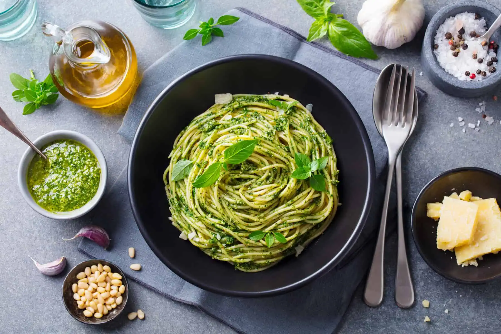
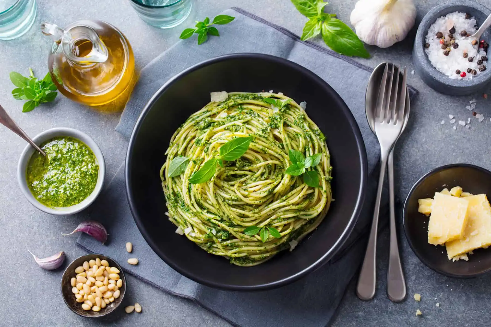

Fetuccini
La auténtica cocina Italiana

Pastas, Risottos y Frutos del Mar
Fetuccini es un clásico de Argentina por la calidad de sus platos y su servicio de excelencia.
Le ofrecemos espacios privados exclusivos y al aire libre donde puede disfrutar tanto una reunión familiar como de trabajo.

 
